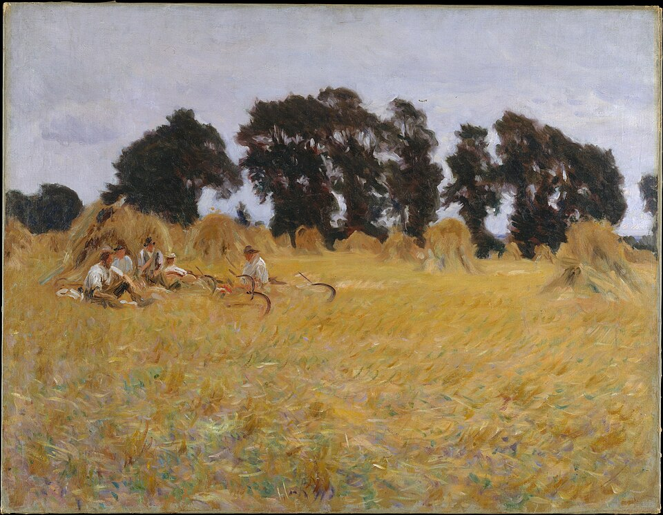

WerrOzan Hybrid AI Music Studio
WERR Z/9Z (0-Byte VRAM) · Güneş Dili Morfoloji · 53-Koma Makam
Sistem 2: Yorumcu · Sistem 1: WerrOzan Engine
Üyelik & Onaylı API Erişimi Ziyaretçi Modu
E-posta ile başvuru yaptığınızda size "Başvurunuz Alındı" bilgilendirmesi, sistem yöneticisine ise onay bağlantısı iletilir. Yönetici onaylarsa size özel woz_... API anahtarınız e-postanıza gönderilir; onaylanmazsa anahtar oluşturulmaz.
İlk Demo Şarkı (WerrOzan Çıktısı) Üyeliksiz Açık

1. Şarkı & Söz Atölyesi Sistem 2: Bekleniyor
1) Fikrini yazıp Söz Werr ile taslak al → 2) Karar Werr ile kilitleyip denetle → 3) Gerekirse El Werr ile düzelt veya Boş Werr ile kilidi aç → 4) Şarkı Werr ile üret.
📋 Sistem Günlüğü & İşlem Durumu
4. Medya Kitaplığım & Kuyruk 0 / 20 Şarkı
Hesabınıza özel en fazla 20 ana şarkı saklanır (21. üretildiğinde en eski silinir). 53-Koma sürümleri 30 dakika geçici saklanır, ardından otomatik temizlenir (ana şarkıdan istediğiniz zaman yeniden üretebilirsiniz).
3. 53-Koma / Türk Müziği Makam Stüdyosu 1 Koma = 22.64c
🎼 ABC Nota Editörü (14-Bit Pitch-Bend MIDI için)
2. Güneş Dili & WERR Z/9Z Monitörü Motor: Yükleniyor
⚙️ Gelişmiş Tohum (WERR Seed) Ayarları
5. Canlı Üretim Kuyruğu 0 Aktif İş
Tüm üyelerin üretim emirleri zaman damgasına göre sırayla (tek seferde 1 üretim) işlenir. Her üye aynı anda kuyrukta veya üretimde en fazla 1 aktif iş bulundurabilir.
| Sıra | Kullanıcı | Parça Adı | Hedef Süre | Tahmini Süre | Durum |
|---|---|---|---|---|---|
| Kuyruk bilgisi yükleniyor... | |||||